JS.LA - Native Mobile Apps in JS - Just Add Cordova!
Cordova, Phonegap, iOS, Android
Overview
- Introduction
- Setting up Cordova
- Making a Cordova project
- Running the App on the Device
- Using Plugins
- Device Considerations
- Development Workflow
- Using Cordova with Git
Introduction
Make some apps!
What we'll cover in this talk
- Mac Development Environment
- Command Line - mostly
- Building for iOS and Android...
- other device platforms exist!
What is Cordova?
The details
- Make native apps using HTML, CSS, and Javascript
- Making the interface = building a webpage
- Native advantage - Access parts of the device that a webpage can't
Setting up Cordova
Tips
- Apache Cordova platform guides
- Installing package dependencies on Mac - use Homebrew
Prerequisites
- This guide assumes you're running a recent laptop with Mac OS 10.10 Yosemite
- Node.js
- Ruby. RVM is useful
- Cordova command line. Installation instructions
Cordova. Phonegap. What's the difference?
Cordova. Phonegap. What's the difference?
- Phonegap makes cloud-based builds
- This talk uses command line Cordova
- Free, license isn't restrictive
- Build locally with no internet connection
- Compatible with more third-party plugins
- More setup than Phonegap
Setting up Android
Install Java JDK
- Install Java JDK from Apple (link)
- ... ignore the Lion logo, it works fine
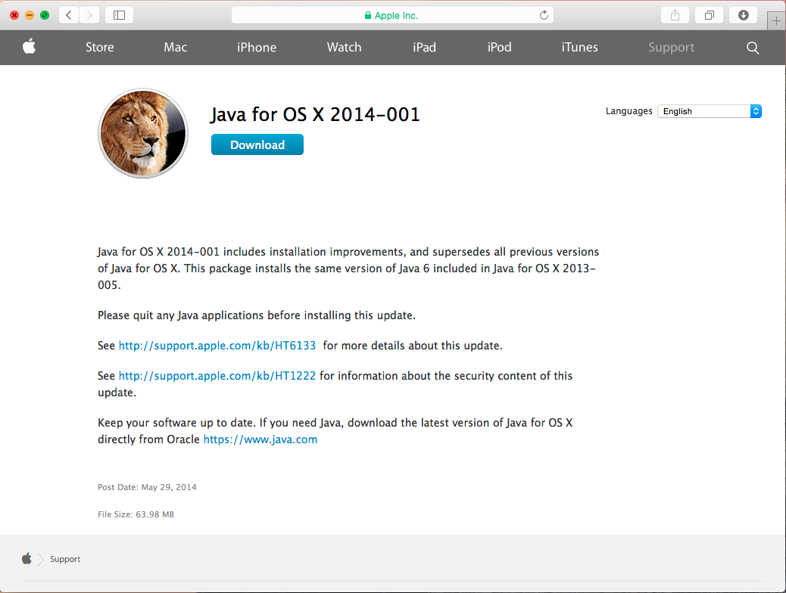
Install Android SDK
- Install the stand-alone Android SDK tools (link)
- Android 5.1.1 (API 22) platform SDK
- Android SDK Build-tools version 19.1.0 or higher
- Android Support Repository (Extras)
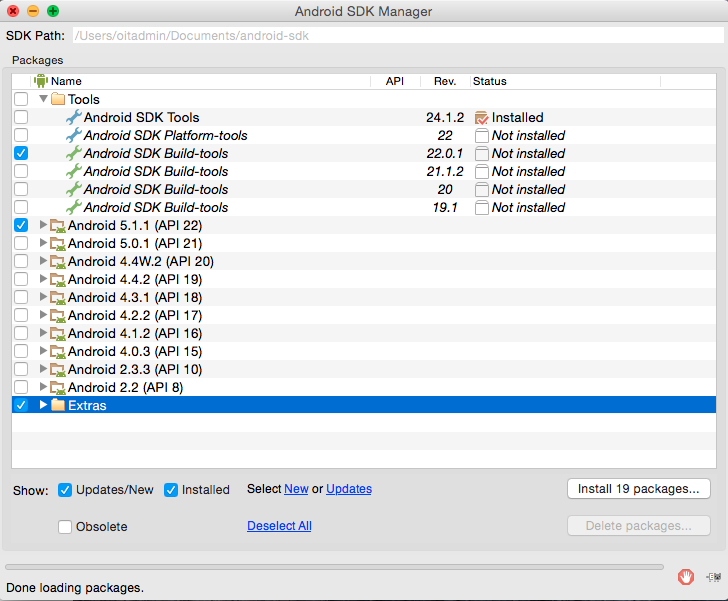
Update Android SDK path
- Update your path so the Android SDK tools can be accessed from the command line
export PATH=${PATH}:/<install folder path>/android-sdk/platform-tools:/>install folder path</android-sdk/tools
Done setting up Android!
- Now for iOS...
Setting up Xcode
Installing Xcode
- Search for Xcode on the App store
- You must be logged in with an Apple ID and agree to the terms
- Add billing info if you haven't
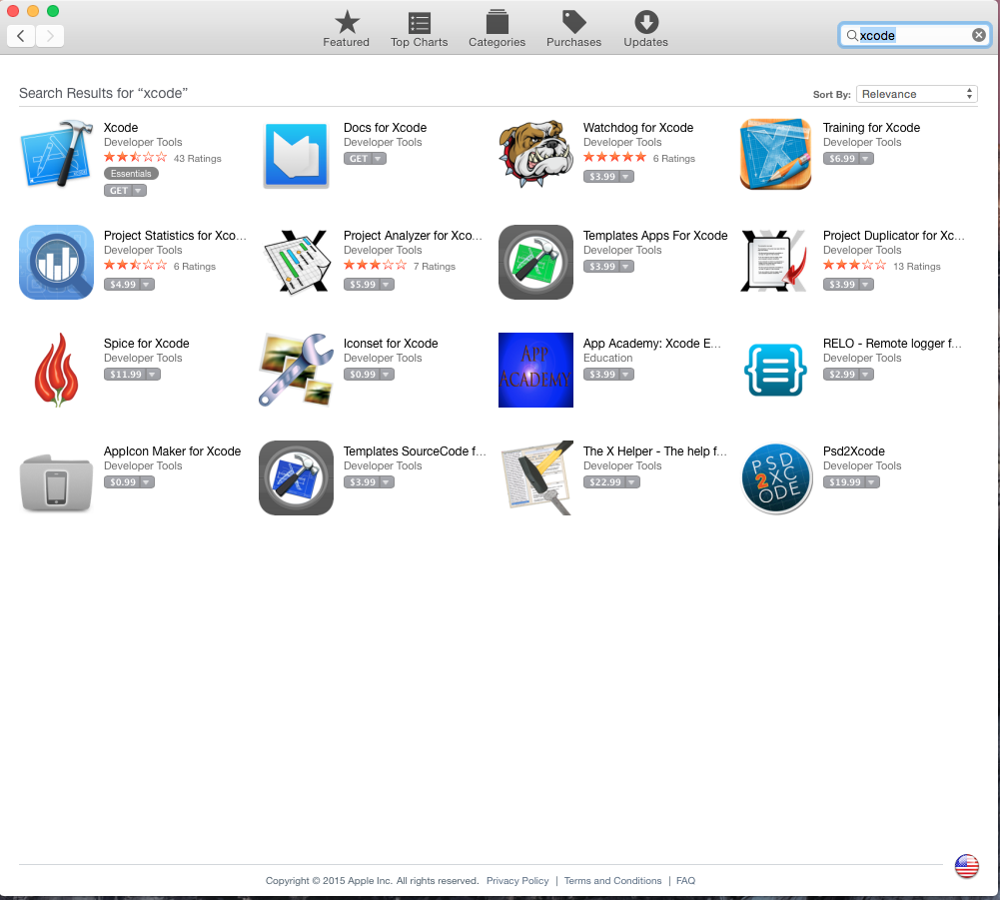
Install Xcode Command Line Tools
- Here's a good guide (link)
- you can install the command line tools with the command xcode-select --install
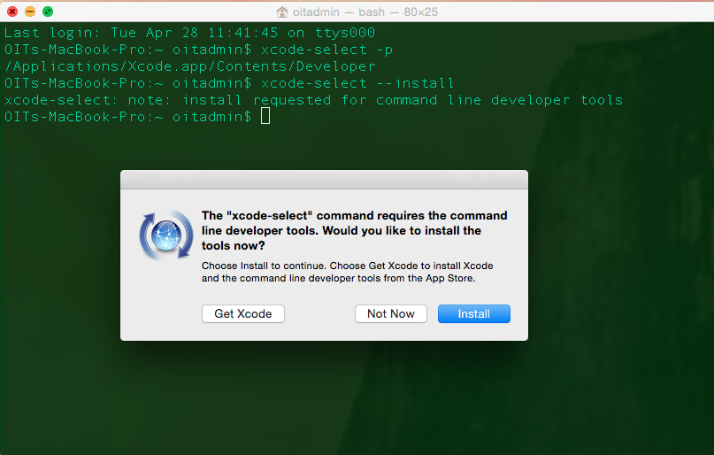
Accept Xcode iOS License Terms
- After installing, run a command. it will prompt you to agree to the Xcode iOS license terms
- Then open Xcode - it will prompt you to install additional components
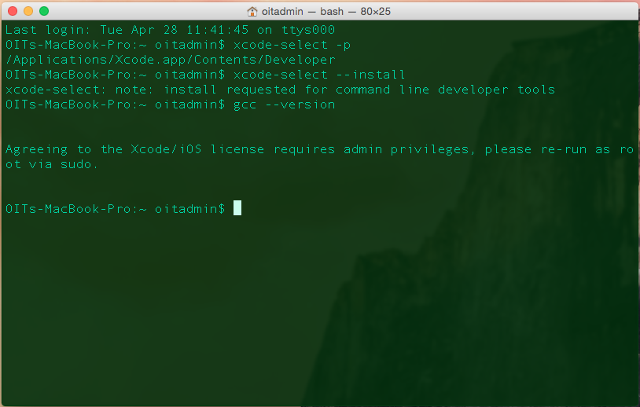
Xcode is ready
- You can build iOS apps
- ... for now
Making a Cordova Project
Tips
- Cordova Docs
- Detailed, helpful documentation
Create a Project
- cordova create hello com.example.hello HelloWorld
- Directory
- Identifier (and bundle ID)
- Application title
- This creates a hello directory with your project
Add Android Platform
- Let's add Android first
- go to the hello directory
- cordova platform add android
- This creates an android directory in /platforms
Add iOS Platform
- Let's add iOS
- cordova platform add ios
- This creates an ios directory in /platforms
- Remember the Application title? Same as folder name
Running the App on a Device
Running on an Android Device
Run with Cordova Command Line - Prereqs
- prerequisites include the default Cordova Android SDK version (Android 4.4.2 (API 19))
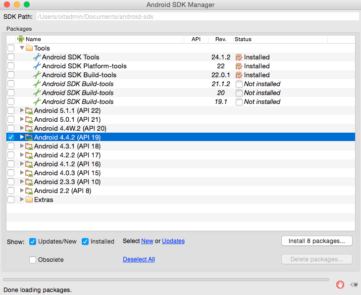
Run with Cordova Command Line - Prereqs
- On Macs, ant is needed. I use Homebrew brew install ant
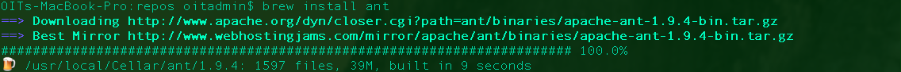
Device: Enable USB Debugging
- Enable in device Settings. Great guide
Run it and debug it
- cordova run android
- Android tools - monitor command. View all of your app's log output on your PC
- Latest version of Cordova deletes the old app.
- I think.
Running on an iOS Device
Initialize the Device
- Connect the device
- "trust this computer"
- Run it with "play" button
- Then a first time progress bar...
Xcode - Enable Developer mode
- Enable this so you don't need to re-enter an admin password every build
- The build continues and...
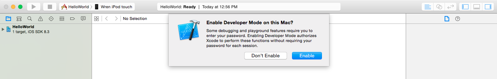
When Xcode goes horribly wrong
Failed to Code Sign
- One of many, many possible errors
- To run on your device, the app must be signed
- You must set up a developer profile in Xcode. Select Fix Issue
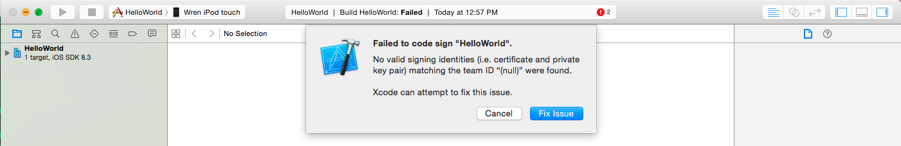
Add Developer Apple ID
- You are prompted to add an Apple ID that is enrolled in a Developer program
- Select "Add..."
- Enter your Apple Developer ID
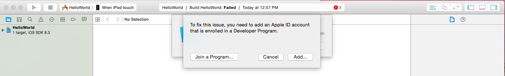
Sidebar: Installing app on devices - It's... complicated
- You must create an Apple ID
- You must purchase an iOS Developer Program Membership ($99)
- You must add your Device UDID to the Provisioning Profile
- You must create a development certificate
- there's more, it's complicated, it sucks
It really does
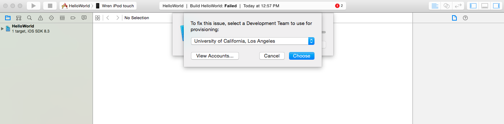
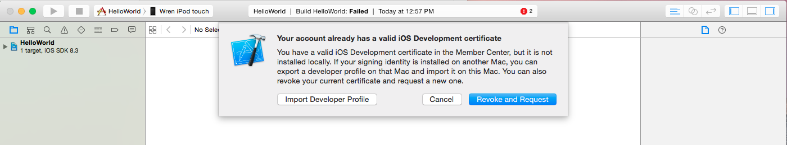
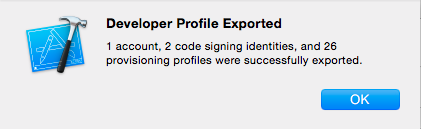
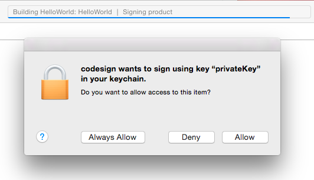
Using Plugins
Adding Plugins Overview
- Plugins provide a JS interface for Native device APIs
- General Docs on Plugin APIs
- cordova plugin add <plugin identifier>
- If it's in the Plugin Registry, it can be added via ID
- Let's add some plugins ...
Add the device plugin
- A "Core" plugin
- Needed to access information about the device
- cordova plugin add org.apache.cordova.device
- (Device API docs)
Add the console plugin
- A "Core" plugin
- Outputs log information, useful for debugging
- cordova plugin add org.apache.cordova.console
- (Console API docs)
Add the camera plugin
- A "Core" plugin
- interacts with the device camera
- cordova plugin add org.apache.cordova.camera
- (Camera API docs)
Using plugins: Caveats
- Must be activated after 'deviceReady' event
- It's asynchronous!
- The Cordova docs on Events are very helpful (link)
Third-party plugins
Third-party plugins
- Will they work? "Maybe. Maybe not."
- Watch for plugin updates! Lock your code to one version if using automated builds
- Cordova updates break older plugins
Micro App Demo
Device, console, camera
Device Considerations
There are always exceptions...
iOS Oddities
- "It doesn't run on my device"
- Installing and setting up XCode
- Developer Licensing, Provisioning Profiles, Certificates
- App Store Submission and Approval
- App Sandboxing and limited access to other features
Android Oddities
- "It doesn't run on these 10,000 other devices"
- Device Fragmentation
- Intents
- Hardware buttons Back, Home, Search, and Info
General Cross-Platform Oddities
- Different UI Behaviors and User Expectations
- Different implementations of software functionality. Local Notifications
Solutions to iOS, Android, and Cross-Platform issues
- Use what you know
- Got an iPhone? Make iPhone.
- Ignoring this rule? Bad
More Solutions to iOS, Android, and Cross-Platform issues
- Test
- Test
- ... Just test everything
Development Workflow
Cordova Setup
- Install SDKs and environments
- Connect and Unlock Device for Development
- Create project
- add platforms
- add plugins
- READY!
Browser Testing
- Open /www folder in web browser
- Test and fix like a webpage
- Native functionality?
- Branch it out so non-native parts can still be tested in the browser
Device Build
- Build app with cordova build <platform>
- Run on device, using either cordova run or IDE
- Check debug logging on PC (if using console plugin)
Super-ugly sketch of Cordova build paths

Using Cordova with Git
(Discussion)
THANK YOU
Any Questions?
wrenr.github.io/cordova-workshop/
wreynolds@oit.ucla.edu